Предметам при визуализации можно назначить определенный материал, столу - дерево, мышке - пластмассу, гире - металл.
Создавать, а точнее имитировать все эти материалы в 3D Max позволяет Material Editor.
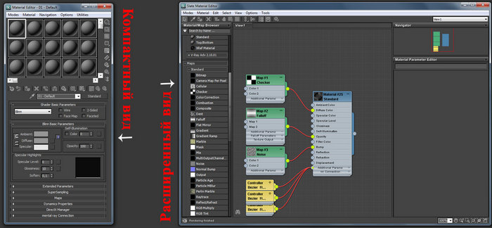
Для того, что бы выбрать вид, нажимаем Modes и выбираем Compact Material Editor:
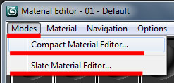В первом окне находится список материалов в виде таблицы сфер, нажимая на одну из них мы переходим к редактированию материала. В первую очередь нужно выбрать тип материала, изначально выбрано Standart, далее присвоить материалу имя.
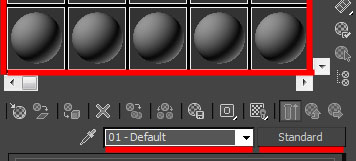1. Для начала выберите первый слот, тип оставим Standart.
2. Назовите материал (например Mat_1).
3. Во вкладке Blinn Basic Parameters:
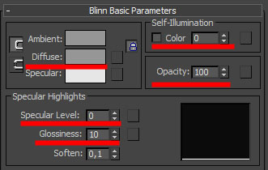
Для примера можно создать такой вот простой глянцевый материал синего цвета. Что бы применить его к объекту можно: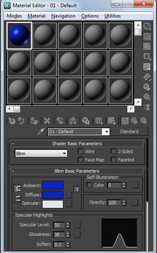
Итак, вы научились создавать простейшие материалы, изменяя их цвет, глянцевость\матовость, прозрачность и самосвечение. Теперь поговорим о вкладке Maps. Это текстурные карты - основа текстурирования в 3D max.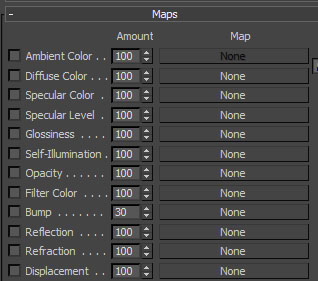
Diffuse Color, Specular Color, Specular Level, Glossiness, Self Illumination, Opacity - уже знакомые вам параметры. Но тут их можно задать с помощью текстурных карт.Filter Color - цвет, в который будет окрашиваться свет, проходящий через объект. Bump - карта неровностей(выпуклостей или впадин) на объекте. Reflection - отражения. Refraction - преломления. Displacement - схоже с Bump, выдавливание гораздо сильнее.
Перейдя во вкладку Maps, вы увидите данный список. None означает что никакой текстурной карты пока нет. Кликнув напротив Diffuse Color на None, вы увидете ещё один список, выберите Bitmap (растровое изображение)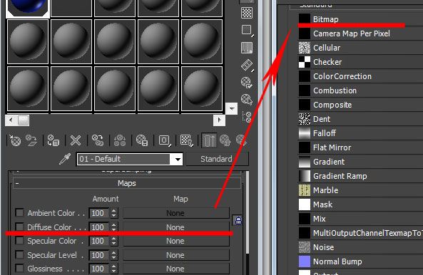
После этого вам предложится выбрать любое изображение, например, можно скачать изображение 100 долларовой купюры и выбрать её: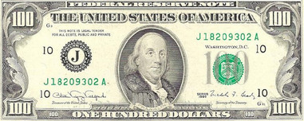
Теперь создайте Plane (проскость) с соотношением сторон примерно как у 100 долларовой купюры и примените материал к плоскости: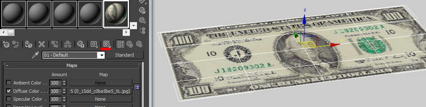
Если плоскость не окрасилась в цвета купюры, нажмите на кнопку Show Standart Map in Viewport (кнопка выделена на скриншоте сверху).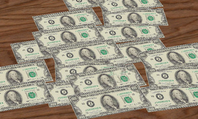
В 3D max конечно же предусмотрена небольшая библиотека готовых материалов (например материал дерева для стола на верхнем скриншоте).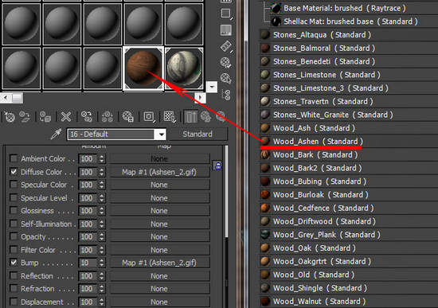